CATNAPPED!
Return of the Order of the W.O.O.F
Creating a story and aesthetic for a stealth based platformer game.
Role : Lead Artist, UI Designer
Duration : 4 weeks
Tools : Interaction Design, Procreate, Adobe Illustrator, Unity
Teammates : Allison Wivagg, Angela Xu, Wenjia Han, Jonathan Choi
Creating a Narrative: Superspy Cats and Cyborg Dogs
Calamity strikes again! World leaders’ cats have been disappearing,
the latest victim being Duchess Fluffy of Kittysburgh. This seems to be
the work of The Order of the W.O.O.F [We Overly Oppose Felines], a secret
society of cyborg dogs who aim to replace all cats. The world’s only hope,
Agent Furball, has to infiltrate their secret underground lair to defeat
the Order and rescue Duchess Fluffy.
Building the World
From our narrative, I had to begin translating it into a 2D world, creating
an evil sewer lair for a secret cyborg dog society. My role focused on environmental
elements, as well as creating our main Character Agent Furball.
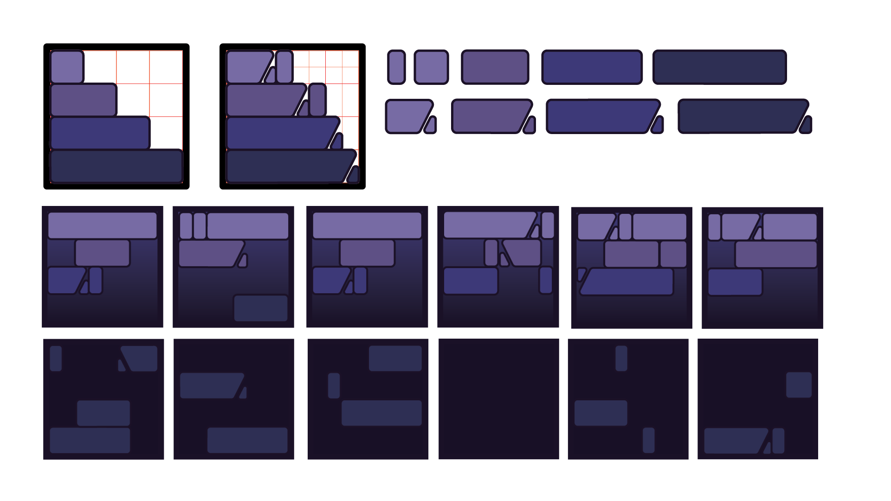
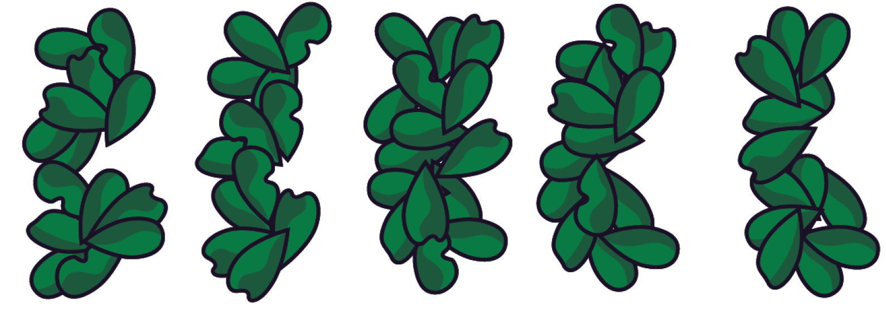
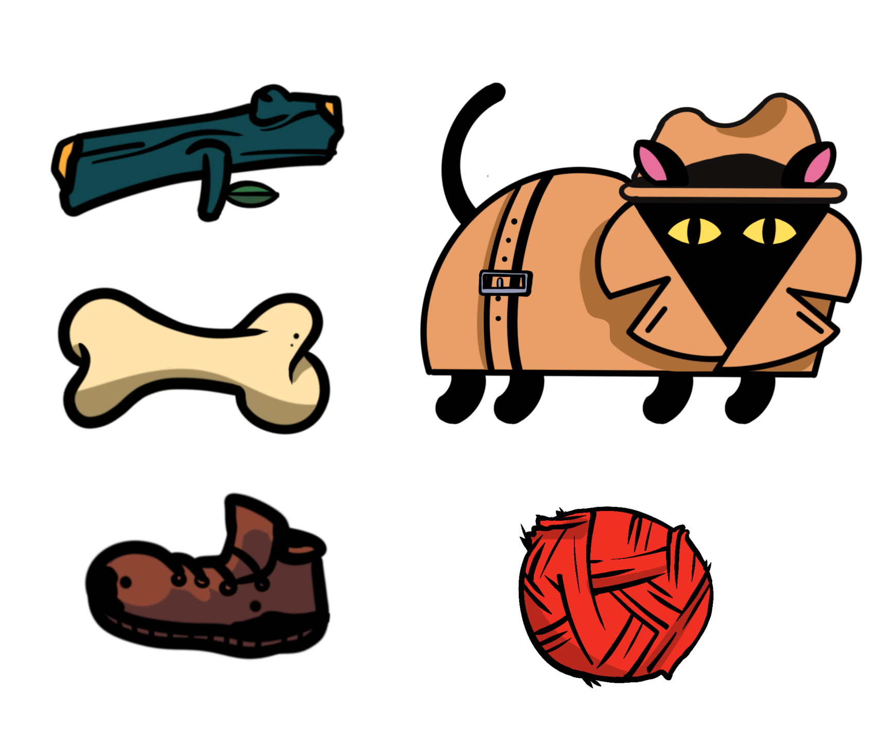
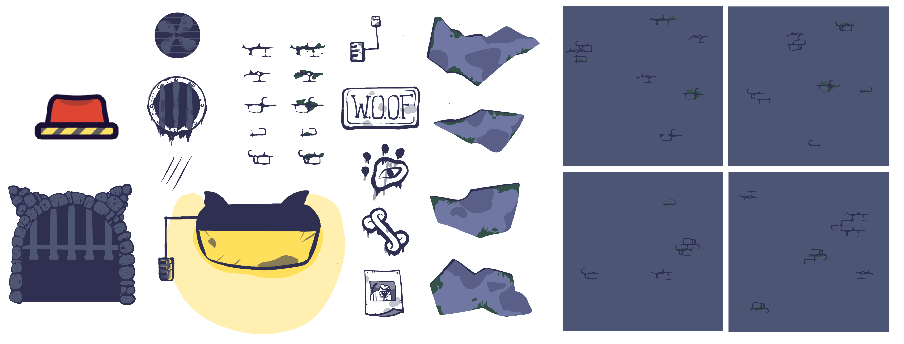
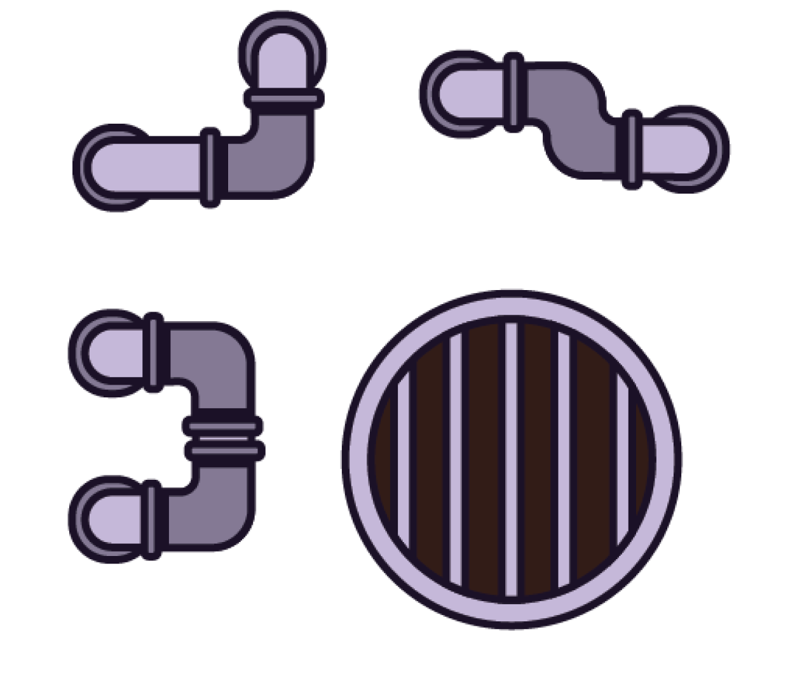

Developing a Story for the UI
I wanted to extend the animated spy-esque aesthetic throughout all aspects of the game
– including the UI. All interface elements (pause screens, buttons, etc.) drew
inspiration from redacted case files, creating open folders that present all buttons.
The UI had a visually accessible palette against the purple background of the game.
For tutorial assets, I drew from traditional type-stamps to depict the key instructions.
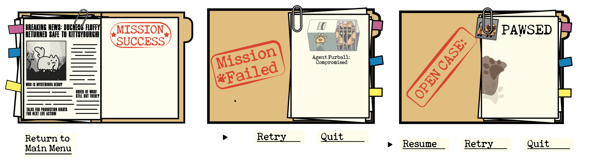
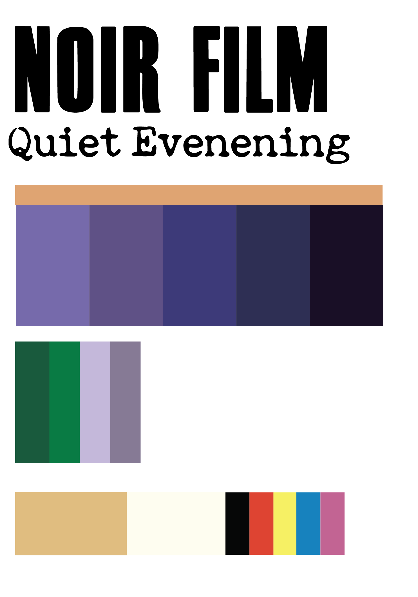
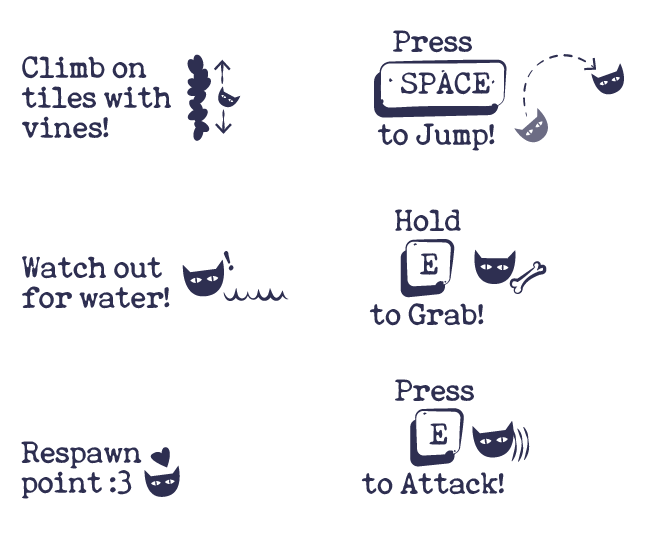
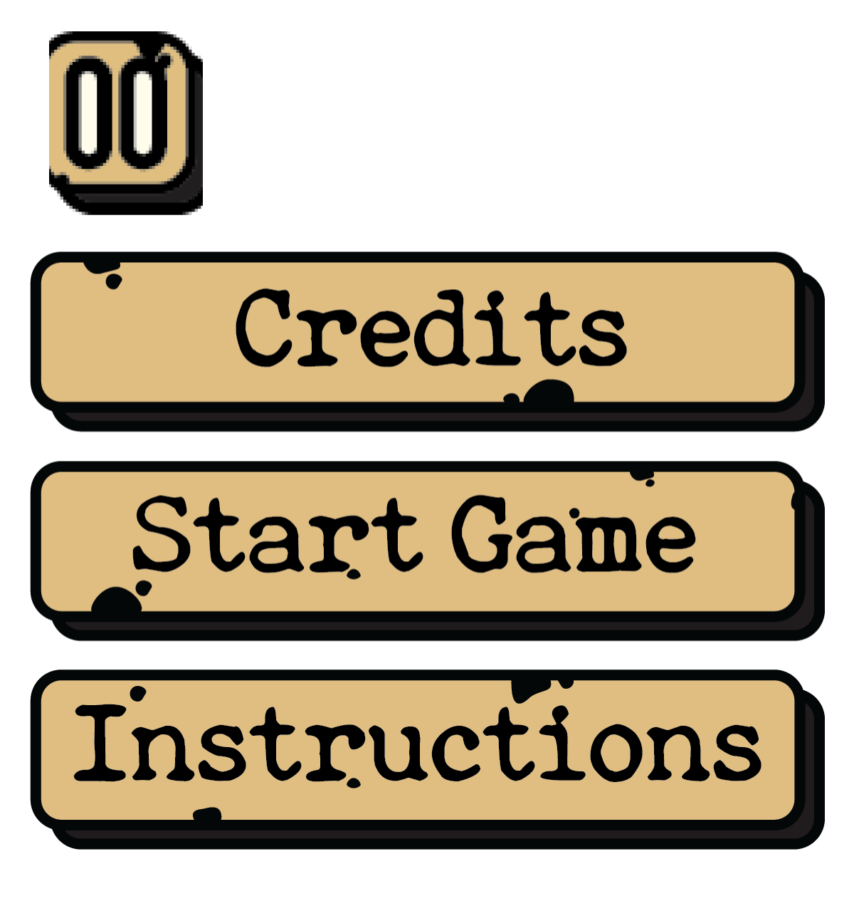
Iterating on Game Assets
Below are some of the iterations made throughout the process of the game – often
discussed with feedback from playtesting and fellow game developers. Based on these
responses, we adjusted the art and UI to match concerns we foresaw as a big issue.
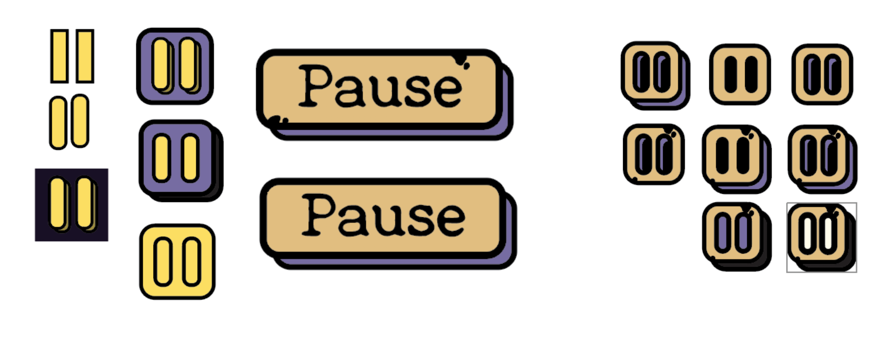
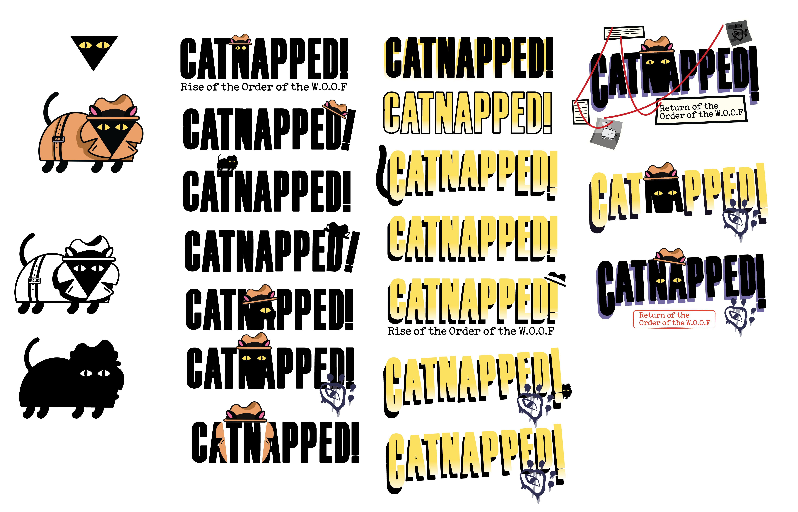
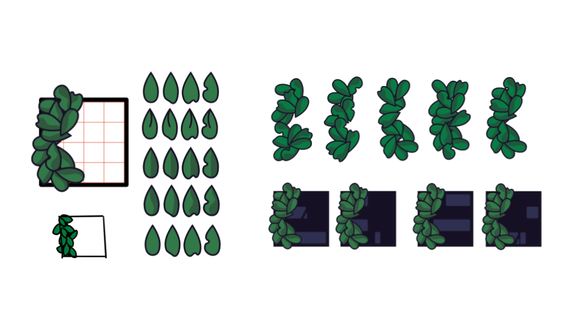
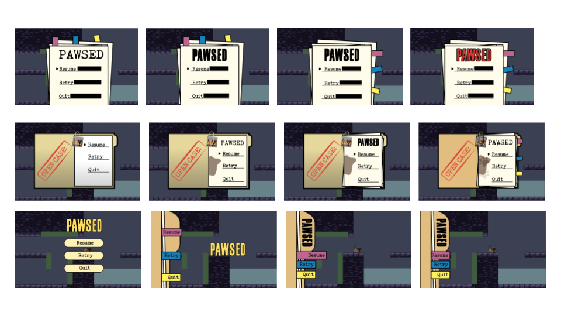
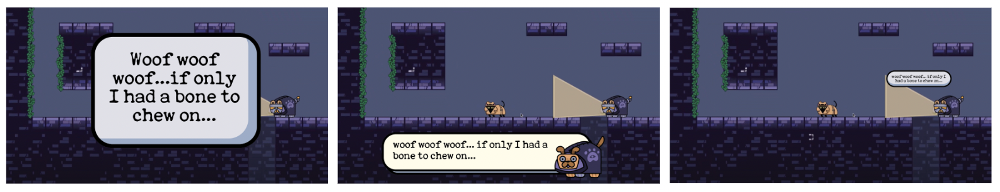
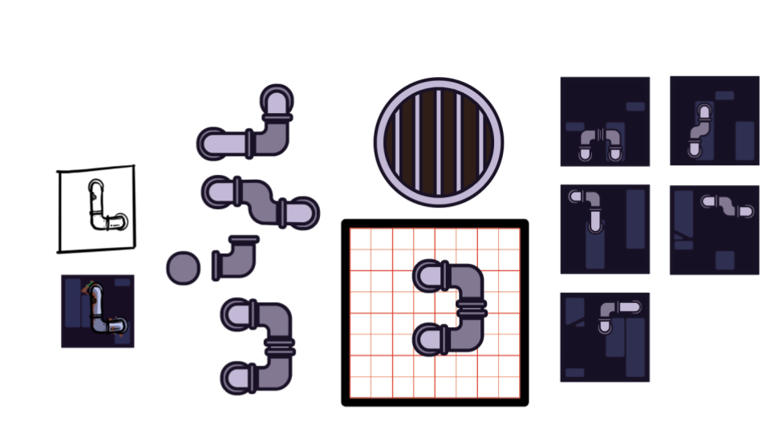